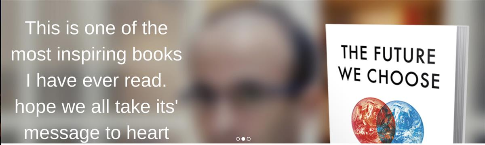
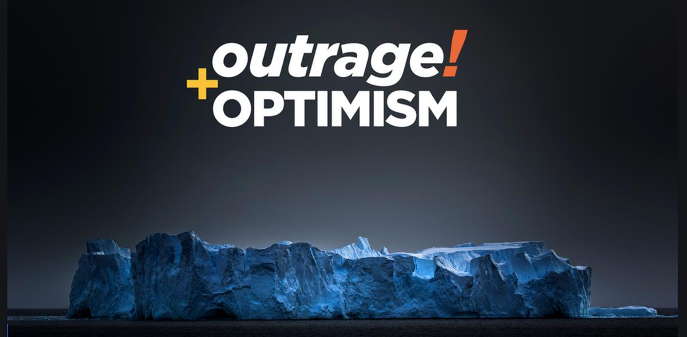

2020: The Start of the Exponential Decade
Global Optimism exists to precipitate a transformation from pessimism to optimism as amethod of creating social and environmental change.
We do this via three main routes.
The first is by launching initiatives either by ourselves or in partnership to achieve specific outcomes we see as important. To date, Global Optimism has launched three initiatives; Mission 2020, Profiles of Paris and Future Stewards. These projects are run independently with our support.
The second route is via engagements with key organisations whose success we regard as vital. We currently have 12 engagements where we hold advisory, board or executive positions.
The third route is via periodic campaigns and media engagements that may either be public or behind the scenes. Our new podcast Outrage and Optimism is now available. Join us.


SOURCE: GLOBAL OPTIMISM